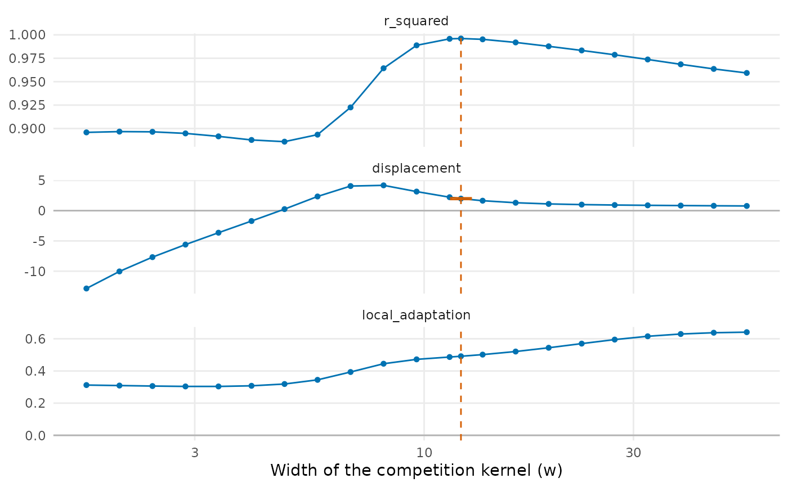

Local adaptation and character displacement from population means
Source:R/population_shifts.R
population_shifts.RdEstimates how far the populations of a species follow the environment of their site and
how far co-occurring species push them apart, by fitting both terms of the model of
sample_individuals() at once to the means of the populations:
Usage
population_shifts(
individuals,
trait = "trait",
site = "site",
species = "species",
env = "env",
abundance = "abundance",
width = NULL,
species_slopes = FALSE,
community = NULL,
nboot = 0,
level = 0.95
)Arguments
- individuals
Data frame with one row per individual, such as from
sample_individuals().- trait, site, species
Names of the columns with the trait value, the site and the species.
- env
Names of one or more columns with the environment of the site.
- abundance
Name of the column with the abundance of the population; not used with
community.- width
Width
wof the competition kernel;NULL(the default) chooses it from the grid described in the section on the width.cis estimated at that width, and the two trade off when data are few.- species_slopes
Give each species its own slope on each environmental variable.
- community
Optional matrix or data frame of abundances, sites in rows and species in columns, so that species present but not measured also push (see the section on competitors).
- nboot
Number of parametric bootstrap simulations (0, the default, for none).
- level
Confidence level of the bootstrap intervals.
Value
An object of class population_shifts: a data frame with one row and the columns
local_adaptation (h; with several variables, local_adaptation_<variable>),
displacement (c), width (w), r_squared (of the fit within species),
n_populations and n_species (that entered as responses). With nboot > 0 it also has
displacement_corrected, displacement_low, displacement_high, p_displacement and,
for each slope, _low and _high columns. The attribute profile holds, for each width
tried, the residual sum of squares, \(R^2\) and the estimates.
Details
$$m_{ij} = a_j + h E_i + c \sum_k p_{ik} (m_{ij} - m_{ik}) \exp\left(-\frac{(m_{ij} - m_{ik})^2}{2 w^2}\right),$$
where \(m_{ij}\) is the mean of species \(j\) at site \(i\), \(a_j\) a
constant of the species, \(E_i\) the environment of the site and
\(p_{ik}\) the relative abundance of species \(k\) at the site. In
sample_individuals(), \(a_j = (1 - h) \theta_j\), h is
local_adaptation, c is displacement and w is displacement_width. The constants of
the species are removed by centring each variable within species, and h and c are the
coefficients of a regression through the origin; w, when not given, is the value of a
grid that leaves the smallest residual sum of squares.
Local adaptation alone moves the populations of a species along the environment, and displacement alone moves them away from the species they meet. The two leave different signatures, but each term alone picks up part of the other: the slope of population means on the environment falls when displacement pulls co-occurring populations apart, and the spread of a site rises with displacement and falls with local adaptation. Fitting both terms together separates them when populations of the same species meet different environments and different competitors. The approach follows the advice of Goldberg & Lande (2006) and Adams & Collyer (2007) to judge divergence among sympatric species after the variation of the trait along the environment is accounted for, here with the strength of competition at each site in place of a contrast between sympatry and allopatry.
With several columns in env, each environmental variable gets its own coefficient
(\(h E_i\) becomes \(\sum_v h_v E_{iv}\)). With species_slopes = TRUE
each species gets its own slope on each variable; the table then gives their unweighted mean
and the attribute species_slopes the slope of each species.
Competitors that were not measured
By default the competitors of a population are the other populations measured at its site,
weighted by abundance. Species that occur at a site but were not measured are then left
out of the push and bias c. With community, a matrix of abundances (sites in rows,
species in columns, with names as in individuals), every species present at a site pushes,
with its share of the abundance of the site. A species not measured at a site enters with
the mean of its populations measured elsewhere, moved along the gradient by the fitted slopes
times the difference between the environment of the site and the mean environment of the
sites where the species was measured (the model is fitted once with the plain means, then
again with the moved ones). Species never measured have no trait value and are left out,
with a warning, of both the push and the total abundance of the site that sets the shares.
Populations measured at a site where community gives
them a smaller abundance than the number of individuals measured (such as zero, when the
census and the measurements come from different visits) take that number as abundance.
Sampling error
The mean of a population enters both sides of the equation, so its sampling error would
correlate the push of competitors with the response and inflate c. The individuals of each
population are therefore split at random in two halves (so the estimates change slightly
with the seed of the random number generator): the response is the
mean of one half, and the own mean in the push is that of the other half (competitors enter
with their full means). Both assignments are stacked in one fit. Only populations with at
least two individuals, of species with at least two such populations, enter as responses;
all populations enter as competitors. Sampling error left in the push still biases c
toward zero, more so with few individuals per population and with strong displacement:
strongly displaced populations sit in the tail of the kernel of their competitors, where the
push is small but its sampling error is not.
Deviations of whole populations from the model (from genetic drift or unmeasured
environmental variables) are not removed by the split: they enter the own mean in the push
and the response alike, so c is biased even when there is no displacement. A deviation
\(\delta\) of a population changes its push from a competitor at distance \(g\)
by about \(\delta \exp(-g^2 / (2 w^2)) (1 - g^2 / w^2)\): the bias is upward when most competitors are closer than w in trait (a
wide kernel) and downward when most are farther (a narrow one). It grows with the variance of
the deviations and does not shrink with more individuals per population. The bootstrap
reproduces this bias, so p_displacement and displacement_corrected account for it, but
the raw displacement does not.
Width of the kernel
Without displacement the width is not identified: the residual sum of squares changes little
along the grid, and a narrow kernel, which acts on few pairs of populations, can give a value
of c far from zero, of either sign. The grid runs from the larger of one eighth of the
median standard deviation of population means within sites and the pooled standard
deviation within populations (a kernel narrower than the spread of individuals mostly fits
sampling noise), but no higher than that median, to four times the median, and is refined by
stats::optimize() around its best value. A warning is given when the best width stays at
one of the ends of the grid after the refinement or when the residual sum of squares changes
by less than 5% along the grid; plot() shows the profile of
the fit and of the estimates along the width. Fix width from independent knowledge of the
niche widths when it is not identified.
Bootstrap
With nboot > 0, new data are simulated with the design of the data (the same sites,
species, environment, abundances and numbers of individuals per population), with the
within-population standard deviation of the data, and refitted as the data were (with the
same width, estimated or fixed). The species constants, slopes and population-level
standard deviation of the simulations come from a fit: the constants are the means within
species of the populations that enter as responses, and the variance of populations is the
root of a moment equation in which each squared residual is net of the sampling variance of
its mean and weighted by the inverse square of its expected value, so that means of few
individuals weigh little (in the fitted set, the sampling variance is scaled by
\((1 - c_0 D_j)^2\), with \(D_j\) the derivative of the push on a
population with respect to its own mean, since the sampling error of the mean also enters
the push removed from it). Two sets are simulated:
without displacement (
c = 0), from the fit without displacement (the slopes of the full fit carry its error into the residuals, inflate the variance of populations and with it the bias ofcunder the null), which givesp_displacement, the two-sided p-value ofcwith the width chosen anew in each simulation, so that the choice of the width is accounted for. The p-value is the share of simulations at least as far from the mean of the simulations as the estimate, since that mean is not zero when sampling error or deviations of populations biasc;from the full fit, with its push removed from the means before they are displaced again, at \(c_0 = \max(\hat c, 0)\) (the model of
sample_individuals()has no attraction; with \(\hat c \le 0\) this set is the null set and its slopes those of the fit without displacement), which give a first-order bias correction ofc,displacement_corrected(\(\hat c - (\bar c^* - c_0)\)), and basic bootstrap intervals forcand for the slopes (\(\hat\theta - (q^*_{1 - \alpha/2} - \theta_0)\) to \(\hat\theta - (q^*_{\alpha/2} - \theta_0)\), with \(\theta_0\) the value that generated the simulations).
The correction and the intervals assume that the bias does not change with c near the
estimate; it does change with strong displacement and with deviations of whole populations,
so the intervals of c cover the true value less often than level. The correction removes
most of the attenuation of c by sampling error when w is well identified; when it is not,
the intervals are wide and the p-value is the better guide. The test is somewhat
conservative: the null simulations take the variance of populations, which sets the bias of
c, from the same data as the estimate, so their centre follows it, and in simulations with
no displacement the test rejected at the 5% level in about 2–3% of data sets. Results change
with the seed of
the random number generator. The simulated values are in the attribute bootstrap, whose
own attribute population_sd gives the population-level standard deviation of each set.
References
Adams, D. C., & Collyer, M. L. (2007). Analysis of character divergence along environmental gradients and other covariates. Evolution, 61, 510–515. doi:10.1111/j.1558-5646.2007.00063.x
Goldberg, E. E., & Lande, R. (2006). Ecological and reproductive character displacement on an environmental gradient. Evolution, 60, 1344–1357. doi:10.1554/05-696.1
See also
sample_individuals(), tstats() with null_ip = "species".
Other trait variation among individuals:
community_index(),
neighbour_metrics,
nested_variance(),
null_intervals(),
plot.mc_trait_gradient(),
plot.nested_variance(),
plot.trait_flex(),
plot.trait_rarefaction(),
plot.tstats(),
plot_population_traits(),
sample_individuals(),
subsample_individuals(),
trait_densities(),
trait_flex(),
trait_gradient(),
trait_gradient_phylo(),
trait_gradient_test(),
trait_gradient_weights(),
trait_rarefaction(),
tstats(),
tstats_summary()
Examples
set.seed(1)
tree <- treeshapesim::sim_tree_shape(20)
sim <- simulate_metacommunity(landscape_implicit(15), species_traits(tree),
competition_matrix(tree, "none"), n_steps = 100,
seed_steps = 1:5)
ind <- sample_individuals(sim, n = 20, local_adaptation = 0.5, displacement = 2)
fit <- population_shifts(ind, nboot = 49)
fit
#> local_adaptation displacement width r_squared n_populations n_species
#> 1 0.4914459 1.990583 12.13176 0.9960785 91 14
#> displacement_corrected displacement_low displacement_high p_displacement
#> 1 2.019634 1.851009 2.113893 0.02
#> local_adaptation_low local_adaptation_high
#> 1 0.4829497 0.503197
if (requireNamespace("ggplot2", quietly = TRUE)) plot(fit)
